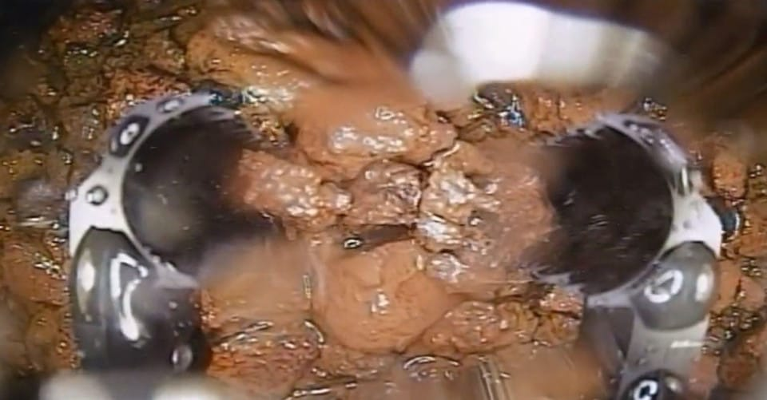

13 years later, Japan Begins Removing Radioactive Fuel Debris from Fukushima Nuclear Reactor

A Closer Look at how Robots are Leading the Fukushima Cleanup Effort and What we can Learn from the 3g Collected Sample
Table of Contents
- The Fukushima Daiichi & Chernobyl Nuclear Disasters
- The Fukushima Daiichi Cleanup Mission
- How the Robot "Telesco" Works
- The Bigger Picture: 880 Tons of Debris
- What’s Next?
The Fukushima Daiichi nuclear disaster in March 2011 remains one of the most devastating nuclear incidents since Chernobyl. Thirteen years later, the challenge of cleaning up the radioactive aftermath continues. A significant step in that long process began last week when a robot entered Reactor No. 2 at the Fukushima plant to retrieve a tiny sample of the melted fuel debris. This is a critical step towards understanding the remaining 880 tons of radioactive material still trapped inside the reactors.
The Fukushima Daiichi & Chernobyl Nuclear Disasters
What Happened at Fukushima Daiichi in 2011?
On March 11, 2011, a massive 9.0 magnitude earthquake struck off the coast of Japan. This earthquake also triggered a devastating tsunami, with waves reaching up to 14 meters (46 feet). The tsunami flooded key systems of the Fukushima plant and caused a loss of power to the cooling mechanisms for three of its reactors.
Without the ability to cool down, the nuclear fuel inside the reactors began to overheat and over the next few days this led to a series of explosions and meltdowns at the plant. As the fuel rods melted, radioactive material was released into the surrounding environment, which contaminated the air, land, and water.
In the immediate aftermath, there was global concern about how far the radiation could spread, and efforts to stabilize the plant became an international priority. Although no immediate deaths were caused by radiation exposure, the disaster left lasting effects on the environment, the local population, and Japan's energy policies. Public trust in nuclear energy significantly declined, leading to the shutdown of many of Japan’s nuclear reactors.
How Fukushima Compares to Chernobyl
Chernobyl occurred in April 1986 in the former Soviet Union (now Ukraine) and remains the most severe nuclear disaster in history. However, there are significant differences between the two incidents.
The Chernobyl disaster was caused by a combination of flawed reactor design and human error during a safety test, which led to a reactor explosion and fire. This incident released massive amounts of radioactive material into the atmosphere, far surpassing the emissions from Fukushima. Unlike Fukushima, where radiation exposure was somewhat contained due to swift evacuations and ocean proximity, Chernobyl's radiation spread over much of Europe.
Chernobyl also resulted in immediate and long-term health consequences. The explosion directly caused 31 deaths, and radiation exposure has been linked to thousands of cancer cases in the decades following the disaster. The affected area remains uninhabitable to this day, and the infamous "Chernobyl Exclusion Zone" serves as a stark reminder of the risks involved with nuclear energy.
The Fukushima Daiichi Cleanup Mission
The mission is part of an ambitious cleanup operation estimated to cost ¥23 trillion ($161 billion) and take decades. Removing the fuel is essential not just for decommissioning the plant, but also for ensuring long-term safety.
Initially scheduled for August 22, the mission faced a hiccup when workers realized the pipes meant to guide the robot into the reactor were set up in the wrong order. This “basic mistake,” as TEPCO called it, led to disappointment and raised concerns from both officials and local residents. Industry Minister Ken Saito stepped in, ordering a thorough investigation to prevent similar issues in the future. TEPCO's president admitted that the error stemmed from poor communication and oversight among the teams.
Now, with the pipes correctly arranged, the two-week mission has resumed. Telesco’s mission is to retrieve just 3 grams of the melted fuel. While this may seem like a small amount, this crucial sample that could provide valuable information for future decontamination and removal efforts. These 3 grams will be transported to a laboratory for analysis, where scientists hope to learn more about the state of the fuel.

How the Robot "Telesco" Works
Operators will send in a robot, named "Telesco," to retrieve the radioactive fuel. Telesco is designed like a fishing rod and its robotic arm can extend up to 22 meters. The robot is also equipped with tongs and a camera, so operators can remotely navigate inside the reactor.

The Bigger Picture: 880 Tons of Debris
Retrieving such a small amount of debris might feel like an understatement when considering the 880 tons of radioactive material that still remain in the three reactors. This is why the mission is so critical: before larger-scale removal efforts can begin, experts need to understand what they are dealing with, down to the smallest detail.
The complexity doesn’t end there. Each reactor contains different forms of debris (fuel mixed with internal materials like concrete, metal, and reactor parts) which melted together during the disaster. The fuel formed a molten, lava-like mass that spattered in multiple directions, and removing it safely is a herculean task.
What’s Next?
The current operation, ~two weeks, is just the first step in an ongoing process. Once scientists better understand the composition of the debris, future robots. These will be likely equipped with stronger, more advanced tools and will attempt to retrieve larger chunks. However, progress is slow, as each step must be carefully planned and executed to avoid further complications.
TEPCO, the plant operator, has set an optimistic timeline to have the site fully decontaminated by 2050, but given the scope and challenges of the project, some experts believe it could take even longer. To complicate matters, Reactor No. 2 is considered to be in better shape than its counterparts, Units 1 and 3, where cleanup will be even more challenging due to more severe damage and higher levels of water accumulation.
Although the mission is a significant step forward, some critics are skeptical about the broader cleanup timeline. The Japanese government and TEPCO have maintained a target of 30 to 40 years to fully decommission the plant, but many, including local residents, feel this timeline is overly optimistic. With no clear plan for the removal and storage of the vast amounts of melted fuel debris, concerns about the project’s long-term feasibility continue to grow.
In a sobering reminder of the long-term impact of nuclear energy accidents, the cleanup at Fukushima will serve as a blueprint for similar disasters in the future. And as Japan moves to reintroduce nuclear power, the lessons learned from this ongoing effort will shape how the world approaches the safety and sustainability of nuclear energy.
Still, the success of this small yet meaningful mission will provide key insights into the condition of the reactors and guide future decommissioning efforts. While TEPCO continues to face immense challenges, this operation marks an essential milestone in the decades-long journey to clean up Fukushima.